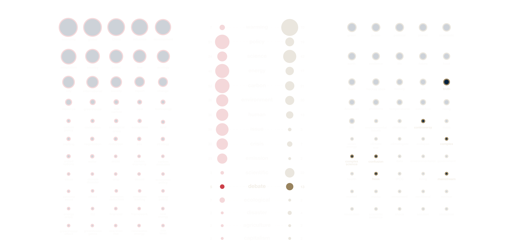
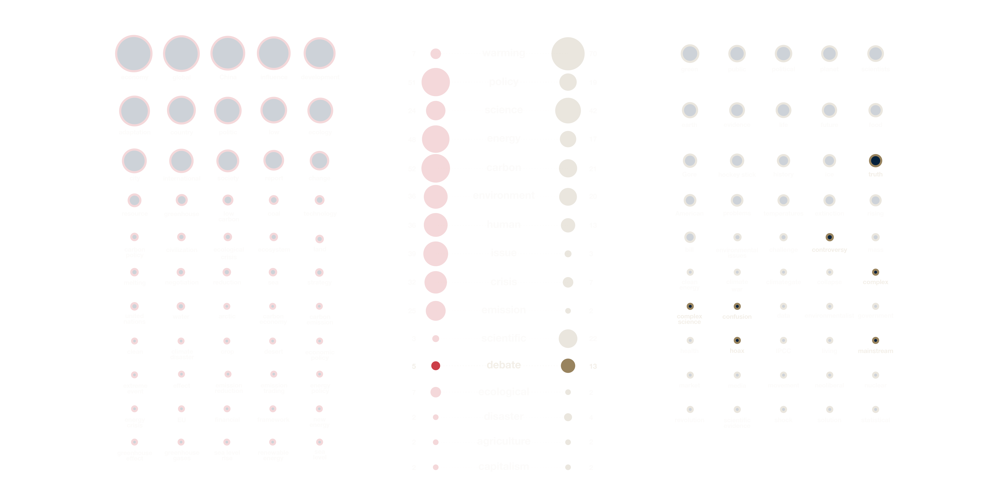

Description
In this section, we study the key words of these 100 books, and use keywords to understand the themes and focus of these books. By comparing the keywords, we can get the topic tendency of 50 Chinese books and 50 American books.
These keywords are extracted from the brief introduction of each book. We extracted the common keywords of Chinese books and American books to facilitate the analysis and comparison of the same part and different part of Chinese concerns and American’s. And we divided the keywords into five categories: actor, field, climate related, controversy, other. So the comparison can be multi-dimensional.
Through this analysis we learned that the 50 Chinese books involve more fields than 50 American’s. There are huge differences between China and the United States in the actor and climate related keywords. In the controversy part, United States has eight keywords, China only has one, it means the American books talk more controversy of climate change than Chinese books.